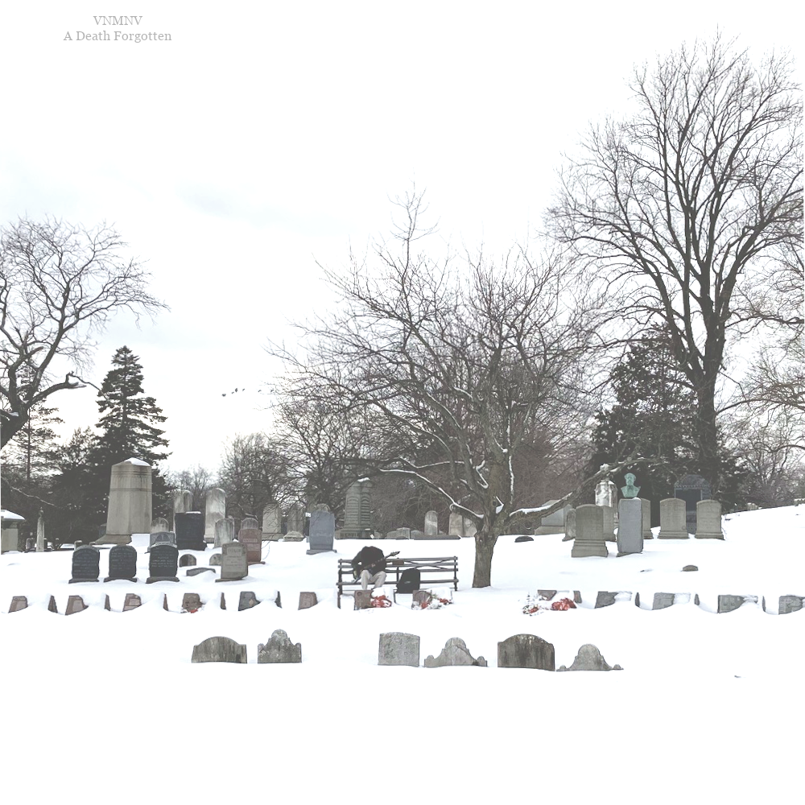

*Headphones or speakers suggested due to dynamic low frequency content.
Credits
Bass & Composition by E.H
Violin by Miles Vinson (2),
Cello by Dorothy Carlos (6, 7, 9)
Words by
Tiger Leet (3),
Saam Niami (6),
Jeff McCloud (9)
Photo taken by Oona Bebout